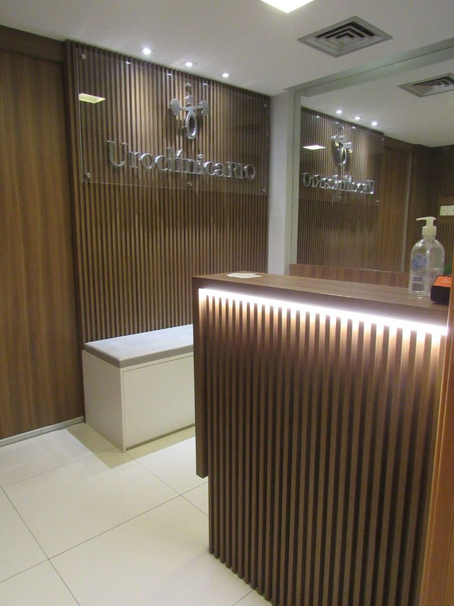
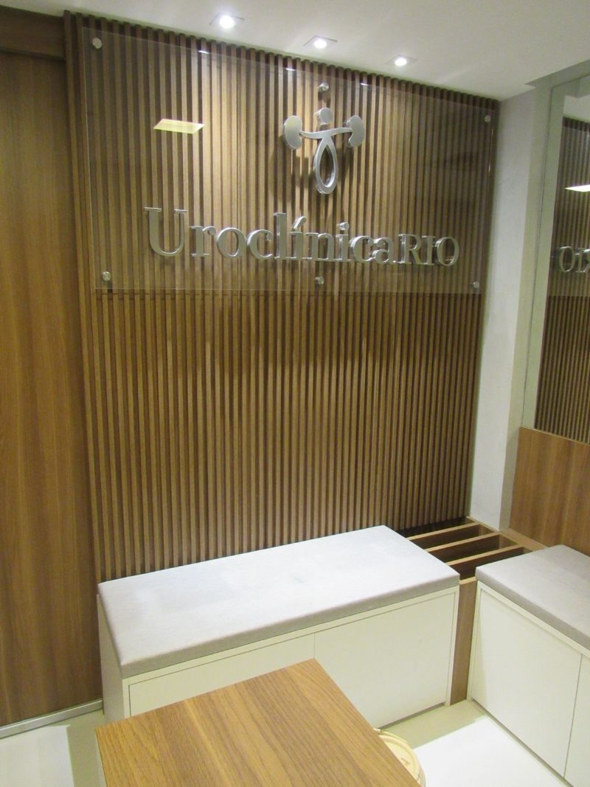
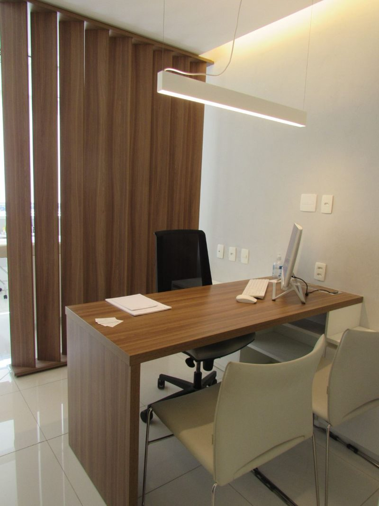
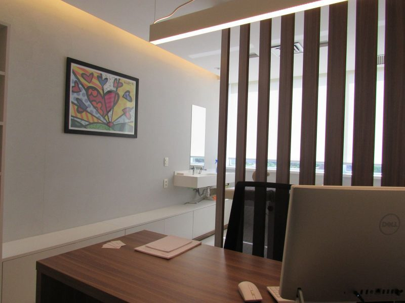
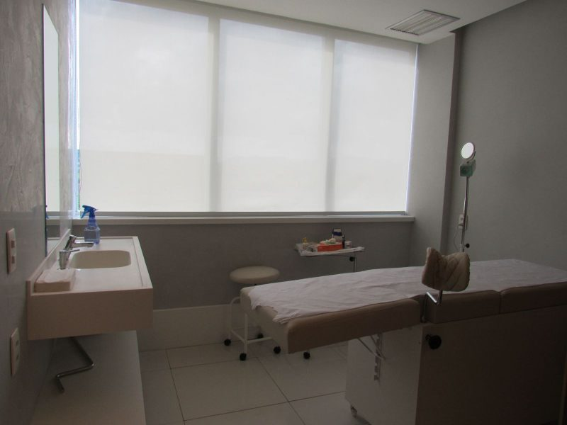
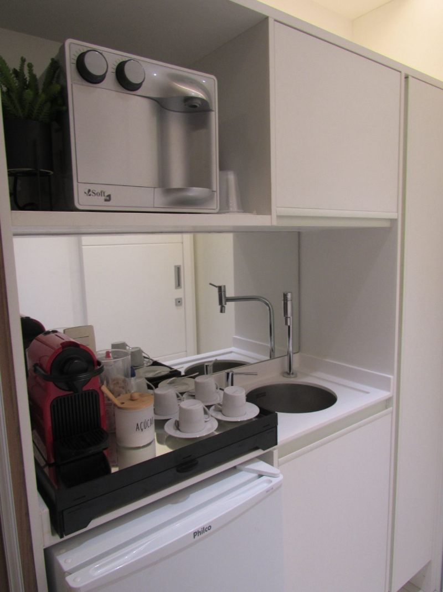

A UroClínica Rio tem duas unidades no Rio de Janeiro — na Barra da Tijuca, na Zona Oeste, e em Bonsucesso, na Zona Norte — com o mesmo padrão de qualidade técnica, tecnologia e acolhimento. Escolha a mais próxima de você ou opte pela teleconsulta por vídeo.
Nossa unidade na Barra da Tijuca fica na Av. Ayrton Senna, um dos principais eixos da Zona Oeste do Rio de Janeiro, com acesso fácil e estrutura moderna. É a referência para quem busca urologista na Barra, no Recreio dos Bandeirantes, em Jacarepaguá, na Freguesia, no Itanhangá, em São Conrado e na Gávea — para consultas de urologia, avaliação uro-oncológica e cirurgia robótica.
A unidade de Bonsucesso atende a Zona Norte do Rio de Janeiro e a Ilha do Governador, na Rua Cardoso de Morais, com boa conexão pela Linha Vermelha e pela Avenida Brasil. É a escolha de quem procura urologista em Bonsucesso, Ramos, Olaria, Penha, Higienópolis, Maria da Graça e Ilha do Governador, com o mesmo corpo clínico e a mesma tecnologia da unidade da Barra.
Recepção acolhedora, consultórios modernos e sala de procedimentos equipada: conheça a estrutura da UroClínica Rio, projetada para oferecer uma experiência de cuidado tranquila e segura em cada visita, com o mesmo padrão na Barra da Tijuca e em Bonsucesso.






Com uma unidade na Barra da Tijuca, na Zona Oeste, e outra em Bonsucesso, na Zona Norte, a UroClínica Rio atende pacientes de diferentes regiões do Rio de Janeiro. Seja para uma primeira consulta de urologia, um acompanhamento uro-oncológico ou uma cirurgia robótica, você encontra atendimento especializado próximo de casa — ou por teleconsulta, onde estiver.
A unidade da Barra da Tijuca fica na Av. Ayrton Senna, 2600, Bloco 3, sala 213 — Barra da Tijuca, Rio de Janeiro/RJ, CEP 22775-003. É um ponto de fácil acesso para quem vem da Barra, do Recreio dos Bandeirantes, de Jacarepaguá e de toda a Zona Oeste do Rio de Janeiro.
A unidade de Bonsucesso fica na Rua Cardoso de Morais, 201, sala 503 — Bonsucesso, Rio de Janeiro/RJ, CEP 21032-900, atendendo com facilidade toda a Zona Norte e a Ilha do Governador.
Sim. As unidades da Barra da Tijuca e de Bonsucesso seguem o mesmo padrão técnico e de acolhimento, com a mesma equipe de urologistas especializados em cirurgia robótica, uro-oncologia e urologia reconstrutora.
Sim. Além das consultas presenciais na Barra da Tijuca e em Bonsucesso, oferecemos teleconsulta de urologia por videoconferência, prática e segura para muitos tipos de avaliação e retorno.
Para muitos casos, o atendimento por videoconferência é prático, seguro e cômodo. Converse com nossos especialistas sem sair de casa.
Agendar teleconsultaFale com nossa secretaria pelo WhatsApp e agende na unidade ideal para você.